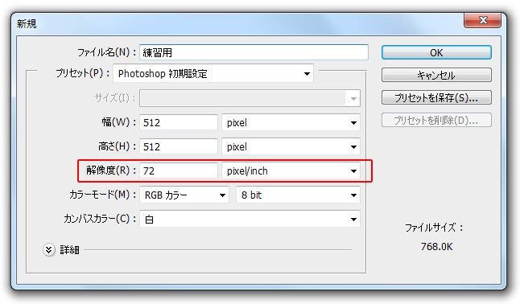

本項では、新規ファイル作成時の画像解像度の設定方法について学習します。
解像度とは簡単に説明すると、出力時における画像の細かさの設定になります。
単位は一般的に「pixel/inch（ピクセルパーインチ）」を使用しますが、
これは画像の1辺において1インチ(2.54cm)あたりに含まれる
ピクセル(ドット)の数を表しています。
この数値が大きいほどより細かい階調表現ができるようになりますが、
際限なく増やし続けるとそれだけファイルサイズが大きくなり、処理が重くなります。
印刷用途では「350pixel/inch」、WEB用途では「72pixel/inch」を
使用することが一般的です。
詳しい説明は後ほど学習しますので、
ここでは初期設定の「72pixel/inch」のままの設定にしておきます。

引き続き設定を続けます。
この画面は閉じずに次の項へ進んでください。